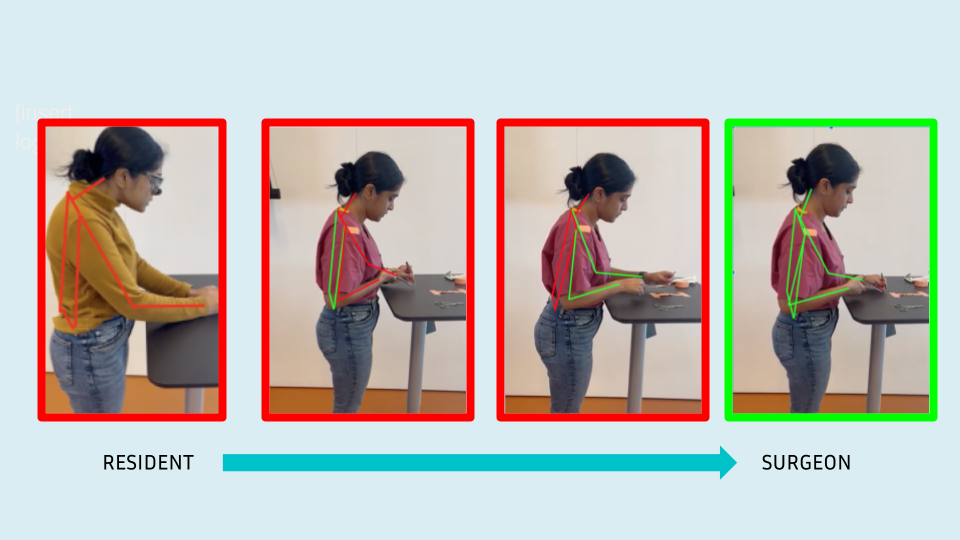

Design & innovation
Surgical ergonomics
Surgical Ergonomics (InSim)
AI-driven video analysis to give surgeons visual feedback on posture during procedures—grounded in interviews with residents and ergonomic experts, with a path toward FDA De Novo Class II and hospital partnerships.